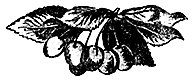

Черешня

Хозяйственное значение черешни
Черешня относится к группе южных плодовых культур и разводится в южной части Советского Союза.
Несмотря на короткий сезон созревания и потребления плодов (с конца мая до начала июля), черешня имеет большое народнохозяйственное значение; это объясняется следующим:
- Черешня созревает раньше всех других пород, открывая фруктовый сезон.
- В районах консервной промышленности черешня обеспечивает первую загрузку заводам и даёт высокоценный продукт.
- Как плодовое дерево черешня отличается ежегодной урожайностью.
История культуры черешни
О времени введения черешни в культуру точных данных не имеется. Нет сомнения, что первобытный человек употреблял в пищу плоды дикой черешни; косточки её были найдены в остатках озёрных жилищ первобытного человека в Западной Европе. Нет также сомнения, что первобытные люди размножали лучшие разновидности дикой черешни.
Первое письменное сообщение о черешне было сделано греческим писателем Теофрастом, жившим в IV веке до нашей эры. Он не указывает, были ли в то время разновидности, поэтому можно предположить, что греки рассматривали черешню как лесную породу. Спустя 100 лет черешня упоминается уже как плодовое дерево. Врач Дифилюс Сифниус, живший в III веке до нашей эры, пишет, что cerasia имеет хороший сок, который используют как лекарство при воспалении желудка, причём красные черешни лучше чёрных. Он делит эту породу на две разновидности — на красную и милетскую (по имени города Милета в Малой Азии). В I веке нашей эры о черешне писал Диоскорид.
Первое подробное описание черешни как культурного растения сделано римским писателем Плинием, жившим в I веке нашей эры. Плиний описывает 10 сортов черешни (и вишни), среди которых выделяет технические группы: вишню и черешню, а последнюю подразделяет на гини и бигарро.
Другой римский писатель Варрон посвятил черешне целую главу, где затрагивает вопросы агротехники, из чего также можно сделать вывод, что культура черешни сравнительно давно была знакома римлянам. Из сочинений последующих авторов можно установить, что в средние века черешня, как и вишня, довольно широко культивировалась по всей Западной Европе.
Первое более или менее точное разграничение черешни и вишни сделано в ботаническом сочинении «Гербариус» (Herbarius), вышедшем в 1491 году.
Первый каталог с названиями сортов плодовых культур во Франции вышел в 1628 году, где было помещено 4 сорта черешен и 7 сортов вишен. В следующем каталоге 1667–1690 годов черешен было помещено уже 9 сортов.
В Северную Америку черешня попала с первыми европейскими колонистами, и первое упоминание о ней относится к XVII веку.
Относительно истории культуры черешни у нас никаких данных нет. Учитывая близость основного очага произрастания черешни — Кавказских гор, — естественно предположить, что она давно была знакома местным жителям и использовалась ими как плодовое дерево.
Нет также сомнения, что в Крыму черешня культивировалась греческими колонистами и генуэзскими поселенцами. П. И. Сумароков, посетивший Крым в 1799 году, описывая сады Крыма, отмечает, что там, наряду с яблонями и другими плодовыми породами, встречается и черешня. В Киевской Руси, где было развито садоводство, среди плодовых пород, вероятно, была и черешня. Старинные песни, где часто упоминается о черешне, служат верным доказательством широкого распространении этой культуры на Украине.
Культура черешни в СССР
Промышленная культура черешни сосредоточена, главным образом, в южных районах Советского Союза — на Украине, в Крыму и на Северном Кавказе. До работ И. В. Мичурина, северная граница произрастания черешни проходила по линии: Минск — Чернигов — Харьков — северная часть Ростовской области на Астрахань. В настоящее время, благодаря работам И. В. Мичурина и его последователей, граница произрастания черешни отодвинута в более северные районы. Выведены новые более морозостойкие сорта — Е. П. Сюбаровой в БССР, Ф. К. Тетеревым в Ленинградской области, С. В. Жуковым в Центральной генетической лаборатории имени И. В. Мичурина.
По данным переписи садов в 1945 г., по РСФСР черешня среди других плодовых пород занимает седьмое место (0,98%). По удельному весу черешня занимает (в процентах):
- в Дагестанской АССР — 5,49%,
- Ставропольском крае — 1,27%,
- Крымской области — 3,78%,
- Северо-Осетинской АССР — 0,76%,
- Краснодарском крае — 1,99%,
- Кабардинской АССР — 0,72%,
- Грозненской области — 1,50%,
- Астраханской области — 0,05%,
- Ростовской области — 1,39%,
- Сталинградской области — 0,05%.
По количеству деревьев черешни:
- первое место занимает Краснодарский край,
- второе место — Дагестанская АССР,
- третье место — Крым,
- четвёртое место — Ростовская область.
В Украинской ССР наибольшее распространение черешня имеет в Мелитопольском и Одесском районах. Большое значение имеет черешня также в Молдавской ССР, среднеазиатских и закавказских республиках.
В дикорастущем состоянии черешня довольно часто встречается в горах Кавказа, где растёт, главным образом, в нижнем поясе на высоте 400–800 м над уровнем моря и в зоне дубовых и буковых лесов, поднимаясь не выше 1300–1500 м над уровнем моря. В Крыму черешня распространена преимущественно по северному склону Крымских гор, в зоне дубовых и буковых лесов. Виноградов-Никитин указывает, что черешня поднимается здесь до 1800 м над уровнем моря.
Среди дикорастущих черешен наблюдается большое разнообразие. В лесах западного Кавказа, особенно на Черноморском побережье, чаще встречаются типы со сладкими плодами, красного или чёрного цвета, в то время как в Крыму преобладают типы с горькими плодами и чёрной окраски.
Происхождение культурных сортов
Черешня относится к семейству розоцветных (Rosaceae), подсемейству сливообразных, или костянковых (Prunoideae или Drupaceae), к роду Cerasus.
Морфологические признаки черешни (Cerasus avium L.) таковы:
- Дерево в среднем 10–15 м высоты, крона с центральным проводником, пирамидальная или овальная, реже округлая;
- Листья в длину 10–15 см, в ширину 5–7 см, удлинённо-яйцевидные, к концу заострённые, с крупно-двоякопильчатым краем; черешок 4–5 см длины, слегка окрашенный в красный цвет, с 1–3 желёзками розового или красного цвета;
- Цветки белые, около 3 см в диаметре, обычно собраны в соцветия по 2–3 штуки;
- Плоды в среднем 1–1,5 см в диаметре, тупо-сердцевидные или округло-сердцевидные, несколько сжатые с боков, жёлтой, розовой, красной или чёрной окраски, с бесцветным или тёмно-красным соком, кисло-сладкого или горького вкуса.
В течение почти двух тысяч лет черешня под влиянием культурного ухода и отбора лучших форм претерпела заметные изменения, в результате которых появились культурные сорта. Уже на ранней стадии разведения черешни появилась разновидность с плотной мякотью — теперешние бигарро. Плиний в I веке нашей эры, описывая известные тогда в Риме 10 сортов, упоминает о «черешнях», отличавшихся от других сортов высокими вкусовыми качествами и твёрдой мякотью.
Улучшение черешни шло почти исключительно путём отбора случайных сеянцев. Только в позднейшее время проводилось искусственное скрещивание.
У нас селекцией черешни первым стал заниматься И. В. Мичурин, который вывел 3 новых сорта для средней полосы Советского Союза. В последние годы большая работа по селекции черешни проводится в Никитском Ботаническом саду, а также на Мелитопольской, Млеевской, Краснодарской и других опытных станциях, где в настоящее время имеется уже ряд ценных сортов и большое количество перспективных гибридных сеянцев.
Сравнительная характеристика сортов черешни по важнейшим производственно-биологическим признакам
Морфологические особенности дерева
Деревья разных сортов отличаются друг от друга как по высоте, так и по ширине кроны. Так, сравнивая данные Оратовского по обмеру деревьев тридцатилетнего возраста на Млеевской опытной станции и Ильинского на Крымской опытной станции (таблица 57), а также наблюдения автора на Краснодарской опытной станции, можно видеть, что деревья по развитию различаются сильнее во взрослом состоянии.
Размеры деревьев черешни разных сортов в Мелитополе в станице Крымской
(по данным Оратовского в Мелитополе и Ильинского в станице Крымской)
| Название сортов | Высота дерева (в м) |
Диаметр кроны (в м) |
Окружность штамба (в мм) |
|---|---|---|---|
| г. Мелитополь, деревья 30 лет | |||
| Дениссена жёлтая | 6,5 | 8,0 | 129 |
| Жабуле | 6,5 | 8,4 | 146 |
| Эльтон | 6,5 | 7,7 | 113 |
| Дрогана розовая | 6,4 | 7,3 | 97 |
| Горная чёрная | 6,7 | 7,5 | 89 |
| Воловье сердце | 6,3 | 5,7 | 72 |
| Франц Иосиф | 5,9 | 6,8 | 88 |
| Французская чёрная | 5,7 | 6,5 | 47 |
| Крымский район, деревья 8 лет | |||
| Наполеон чёрная | 4,2 | 2,7 | — |
| Люция жёлтая | 4,0 | 3,6 | 43,4 |
| Рамон Олива | 4,1 | 3,2 | 34,1 |
| Апрелька | 4,0 | 2,9 | 37,9 |
| Золотая | 4,0 | 3,0 | 38,8 |
| Найта чёрная | 3,3 | 3,2 | 35,9 |
| Дениссена жёлтая | — | 2,8 | 35,0 |
| Дайбера чёрная | 3,7 | 2,9 | 38,0 |
| Франц Иосиф | 3,7 | 2,7 | 34,2 |
| Дрогана розовая | 3,6 | 2,8 | 31,8 |
| Гедельфингенская | 3,7 | 2,6 | 34,9 |
В зависимости от возраста деревьев, сорта черешни по силе роста можно сгруппировать следующим образом (табл. 58).
Группировка сортов черешни по высоте дерева
| Высокие | Средние | Низкие |
|---|---|---|
| Возраст деревьев: 30 лет | ||
|
Эльтон |
Дрогана розовая Воловье сердце |
Горная чёрная Французская чёрная |
| Возраст деревьев: 9 лет | ||
|
Эльтон Губена красная |
Белая из Бордо |
Дрогана розовая Принцесса Французская чёрная |
Кроны по ширине бывают широкими, средними и узкими.
Группировка сортов черешни по ширине кроны
| Широкая | Средняя | Узкая |
|---|---|---|
| Возраст деревьев: 30—35 лет | ||
|
Эльтон Горная чёрная Дрогана розовая |
Французская чёрная Воловье сердце |
|
| Возраст деревьев: 9 лет | ||
|
Бордо белая |
Эльтон |
|
По форме кроны бывают узкопирамидальные или сжатые, высоко-овальные, округлые или шарообразные, не широко-округлые, не обвислые. По своему характеру кроны бывают густые, средней густоты и редкие.
Штамб бывает толстым, средним и тонким.
Группировка сортов черешни по толщине штамба
| Толстые | Средние | Тонкие |
|---|---|---|
| Возраст деревьев: 30 лет | ||
|
Эльтон |
Дрогана розовая Горная чёрная |
Воловье сердце Французская чёрная |
| Возраст деревьев: 8 лет | ||
|
Дрогана розовая |
||
Ветви могут быть толстые, средней толщины и тонкие. Угол отхождения бывает острый (Эльтон) и прямой (Жабуле). Сорта с острыми углами ветвления являются менее желательными, так как у них часто наблюдаются разломы ветвей.
Листья различаются по форме и по толщине пластинки, величине, типу зазубренности и характеру черешка.
Плоды отличаются по величине, форме, окраске кожицы, характеру и цвету мякоти, цвету сока, форме и величине косточки, длине и толщине плодоножки.
Группировка сортов черешни по признакам плодов
| Признаки плодов | Сорта | |
|---|---|---|
| Величина плодов | Крупные |
Гедельфингенская и др. |
Средние |
||
Мелкие |
Апрелька и др. |
|
| Форма плодов | Плосковатые |
|
Шаровидные |
Виндзор |
|
Удлинённые |
||
Широко-округлые |
||
Округло-сердцевидные |
||
Широко-сердцевидные |
||
Удлинённо-сердцевидные |
Эльтон |
|
| Плодоножка | Короткая |
|
Средняя |
||
Длинная |
||
| Окраска кожицы | Жёлтая |
|
Жёлтая со слабым румянцем |
||
Жёлтая с сильным румянцем |
||
Тёмнокрасная |
||
Чёрная |
Чёрный орёл |
|
| Характер мякоти | Мягкая |
|
Полу-хрящеватая |
||
Твёрдая (бигарро) |
||
| Величина косточек | Малая |
|
Средняя |
||
Крупная |
||
| Форма косточек | Шаровидная |
|
Овальная |
||
Удлинённая |
Эльтон |
|
Зимостойкость
Черешня не отличается хорошей морозостойкостью. На юге Белоруссии, в среднерусских областях и в Среднем Поволжье черешня часто и сильно подмерзает. Только выносливые мичуринские сорта сравнительно хорошо выдерживают зимы. Даже на юге Украины, в Крыму и на Северном Кавказе черешня нередко подмерзает довольно сильно, а в отдельные суровые годы наблюдаются случаи полной гибели деревьев. Повреждения обычно выражаются в гибели цветочных почек, годичного прироста, многолетних ветвей и всего дерева.
Критическую минимальную температуру, при которой наступает гибель тех или иных органов дерева, установить очень трудно. Большое значение имеет состояние здоровья деревьев, применяемая агротехника, местоположение участка, время наступления мороза и характер падения температуры, выносливость сорта.
Изучение повреждений, проведённое в Краснодарском крае Н. Ф. Снитко, А. К. Приймак и И. М. Рядновой, показало, что на пониженных частях рельефа: на первых террасах долин, в балках и т. п., черешня значительно сильнее подвержена действию низких температур. Взрослые плодоносящие деревья переносят морозы значительно лучше. М. А. Колесников указывает, что наиболее сильные повреждения были в садах с плохой агротехникой.
Резкие температурные колебания зимы 1933/34 г. на Кубани с минимумами до —29,1° в декабре вызвали массовые обмерзания, доходившие до полной гибели деревьев.
Наиболее чувствительными и чаще повреждающимися органами являются цветочные почки, у которых повреждаются или все развивающиеся бутоны или часть их. При частичном повреждении урожай снижается соответственно силе повреждения, но несколько компенсируется более крупными плодами. На степень повреждения оказывают большое влияние сортовые особенности. Так, например, в условиях центральной части Кубани наиболее сильное повреждение цветочных почек наблюдается у сортов Апрелька, Эльтон. Иногда морозы повреждают только одни пестики, и дерево имеет полное цветение, что наблюдалось на сорте Апрелька. Весенние заморозки иногда повреждают цветки. Так, в 1948 г. заморозок силой — 2,2° нанёс сильное повреждение.
Особенно сильно пострадали сорта:
- Вердерская ранняя,
- Дениссена жёлтая и другие.
Наоборот, сорта Золотая, Рамон Олива, Дайбера чёрная имели ничтожные повреждения.
Наиболее часто и сильнее повреждаются сорта:
- Наполеон розовая,
- Эльтон,
- Крюгера чёрная,
- Франц Иосиф.
Нередко у деревьев наблюдаются подмерзания штамба, выражающиеся в морозобойных пятнах и растрескивании коры. Особенно сильно поражаются штамбы у сортов Рамон Олива, Крюгера чёрная и Наполеон розовая, а также у Дайбера чёрной и Апрельки.
Следует отметить, что деревья черешни, за исключением старых и больных, довольно хорошо восстанавливают свою крону.
Сроки цветения и созревания плодов
Кроме морфологических признаков, при определении сортов имеют также большое значение и некоторые биологические признаки, как, например, время цветения и сроки созревания плодов.
Время цветения
Время цветения большинства сортов черешни почти совпадает, но всё же их можно разбить на 3 группы:
- раноцветущие,
- среднецветущие,
- поздноцветущие.
Время созревания
По времени созревания плодов все сорта черешни также можно распределить на группы.
Время созревания различных сортов черешен в г. Краснодаре, по данным 1943—1945 гг.
| Числа | Сорта |
|---|---|
| Май | |
20–30 |
|
| Июнь | |
1–5 |
Рамон Олива, Жабуле, Вердерская ранняя, Кассини ранняя |
6–10 |
Эльтон, Губена красная |
11–15 |
Люция жёлтая, Гинь жёлтая, Чёрный орёл, Губена красная, Крюгера чёрная |
16–20 |
Крюгера чёрная, Бютнера красная, Дрогана розовая, Дайбера чёрная, Гедельфингенская, Принцесса, Гоше, Французская чёрная |
20–25 |
Наполеон красная, Плотномясая, Белая из Бордо, Франц Иосиф, Дрогана жёлтая, Атерман Кара |
26–30 |
Наполеон белая, Золотая |
| Июль | |
1–4 |
Гефнера красная |
П. С. Щербина на основании своих восемнадцатилетних наблюдений в Крыму распределяет 55 сортов черешни по времени созревания на 9 групп.
Группировка сортов черешни в Симферополе по срокам созревания плодов
(по данным П. С. Щербина)
| Группы | Сорта |
|---|---|
I |
Гинь самая ранняя, Гинь дорожная |
II |
Гинь ранняя Коктан, Гинь салгирская, Гинь кобургская |
III |
Жабуле, Найта ранняя, Гинь Клейдинст, Гинь орманская |
IV |
Ревершон, Киска-сап, Винклера белая, Люция, Эльтон, Гинь Риверса |
V |
Бигарро Людвига, Бигарро Эсперена, Рамон Олива, Крюгера чёрная, Бигарро Лютера, Винклера чёрная, Гинь Уллинса, Гинь Фромма, Татарская, Гинь лоснящаяся, Гинь Огайо, Мецель, Гинь Гарсин, Гинь Даутона |
VI |
Наполеон розовая, Бигарро большая красная, Бигарро Корниала, Гедельфингенская, Бигарро длиннохвостая, Чёрный орёл, Дайбера чёрная, Леклер |
VII |
Бигарро Гермерсдорф, Дрогана жёлтая, Бигарро большое сердце, Бигарро буро-красная, Бютнера красная, Бигарро Омиссен, Бигарро большая белая, Бигарро большая чёрная, Бигарро флорентийская, Гинь шок, Гинь мериз |
VIII |
Бигарро Шнейдер, Дениссена жёлтая, Бютнера жёлтая, Бигарро Франсуа, Бигарро унцевая |
IX |
Бигарро Гильдесгейм |
Рис. 251. Периоды созревания различных сортов черешни в г. Краснодаре.
Урожайность
Черешня отличается средней урожайностью по сравнению с такими породами, как яблоня и груша.
В пору плодоношения черешня вступает обычно в возрасте 7–8 лет, хотя первые небольшие урожаи на Кубани появляются и с 5 лет. Такой ранней урожайностью, по данным автора, на Краснодарской плодово-виноградной опытной станции отличились сорта: Золотая, Франц Иосиф, Жабуле, Эльтон.
Таким образом, к скороплодным следует отнести следующие сорта:
- Золотая,
- Губена красная,
- Бордо белая,
- Дайбера чёрная.
Сорта Жабуле и Рамон Олива, хотя и рано начинают плодоносить, но благодаря редкой кроне, вследствие слабого ветвления, не дают больших урожаев.
Во взрослом состоянии, в возрасте 14–33 лет, деревья черешни дают в среднем 30–70 кг, но отдельные сильные и урожайные деревья в благоприятные годы дают свыше 200 кг. В возрасте 8–11 лет деревья уже дают свыше 20 кг, а отдельные высокоурожайные деревья — до 50 кг. Наибольшей урожайностью в возрасте 7–9 лет в Краснодарском крае отличаются: Губена красная, Бордо белая, Дайбера чёрная. В возрасте 10 лет в станице Раевской высокий урожай дала Апрелька; в Мелитопольском районе, по данным Оратовского, наивысший урожай дал Франц Иосиф — 35,3 кг.
По данным Краснодарской плодово-виноградной опытной станции (Кедрова и др.), наибольшей урожайностью отличаются Дайбера чёрная, Апрелька и Наполеон красная. Урожайность Гедельфингенской сильно колеблется, и она редко даёт высокие урожаи. По многолетним данным Оратовского, на Мелитопольской плодово-виноградной опытной станции наиболее урожайными сортами являются: Дрогана розовая, Жабуле и Франц Иосиф.
Урожайность деревьев различных сортов черешни (в кг) в Краснодарском крае и в Мелитопольском районе УССР
| Название сортов | Краснодар- ская плодово- виноградная опытная станция (возраст деревьев 20 лет) |
Совхоз № 2 г.Краснодара (возраст деревьев 14 лет) |
Мелито- польская плодово- ягодная опытная станция (возраст деревьев 24-33 года) |
|||
|---|---|---|---|---|---|---|
средняя |
максимальная |
средняя |
максимальная |
средняя |
максимальная |
|
| Апрелька | 45,5 | 78,0 | 51,1 | 97,0 | — | — |
| Воловье сердце | — | — | — | — | 34,4 | 115,0 |
| Гедельфингенская | 15,0 | 19,0 | 71,0 | 115,0 | — | — |
| Дайбера чёрная | 53,0 | 80,0 | — | — | — | — |
| Дениссена жёлтая | 47,0 | — | — | — | — | — |
| Дрогана жёлтая | 30,0 | 39,0 | — | — | — | — |
| Дрогана розовая | — | — | — | — | 69,1 | 208,0 |
| Жабуле | — | — | — | — | 55,7 | 138,3 |
| Наполеон розовая | — | — | — | — | 43,6 | 47,4 |
| Наполеон красная | 59,7 | 69,6 | 46,8 | 57,0 | — | — |
| Рамон Олива | 40,0 | 66,0 | 38,8 | 46,0 | — | — |
| Франц Иосиф | — | — | — | — | 49,2 | 213,9 |
| Эльтон | — | — | — | — | 36,0 | 157,7 |
Урожайность деревьев находится в прямой зависимости от размеров деревьев, как показали учёты Оратовского. Чем больше размер дерева и толще штамб, тем оно более урожайно. Редкокронные сорта Рамон Олива и Жабуле только в более позднем возрасте бывают урожайны, поэтому для таких сортов в раннем возрасте, при формировании кроны, нужно обязательно применять укорачивание побегов.
Урожайность молодых деревьев различных сортов черешни в Краснодарском крае и Мелитопольском районе УССР (в кг)
| Название сортов | Совхоз «Гигант» (возраст деревьев 8 лет) |
Совхозы № 1-2 г.Краснодара (возраст деревьев 8 лет) |
Краснодар- ская опытная станция (возраст деревьев 9 лет) |
Станица Крымская (возраст деревьев 8 лет) |
Станица Раевская (возраст деревьев 10 лет) |
Мелито- польская опытная станция (возраст деревьев 8—11 лет) |
|||||
|---|---|---|---|---|---|---|---|---|---|---|---|
средняя |
максимальная |
средняя |
максимальная |
средняя |
максимальная |
средняя |
максимальная |
средняя |
средняя |
максимальная |
|
| Апрелька | 2,5 | 7,0 | 7,8 | 15,6 | 22,6 | 30,0 | 2,4 | 7,6 | 36,7 | — | — |
| Бордо белая | — | — | — | — | 33,6 | 49,5 | — | — | — | — | — |
| Гедельфингенская | — | — | — | — | — | — | 5,3 | 13,5 | 19,0 | — | — |
| Губена красная | — | — | — | — | 29,3 | 50,0 | — | — | — | — | — |
| Дайбера чёрная | 11,1 | 20,0 | 17,8 | 29,2 | — | — | 2,2 | 2,5 | — | — | — |
| Дениссена жёлтая | 6,9 | 13,5 | — | — | — | — | 4,0 | 9,0 | — | — | — |
| Дрогана жёлтая | 7,1 | 16,0 | — | — | — | — | — | — | — | — | — |
| Жабуле | — | — | — | — | 10,2 | 24,0 | — | — | — | — | — |
| Люция жёлтая | — | — | — | — | — | — | 4,9 | 8,0 | — | — | — |
| Наполеон розовая | 7,1 | 15,0 | 8,0 | 17,0 | — | — | — | — | 9,0 | — | — |
| Наполеон чёрная | — | — | — | — | — | — | 6,3 | 12,0 | — | — | — |
| Рамон Олива | 5,4 | 8,3 | — | — | — | — | 1,2 | 5,0 | 27,0 | — | — |
| Ранняя марка | — | — | — | — | — | — | — | — | — | 11,8 | 14,8 |
| Татарская чёрная | — | — | — | — | — | — | — | — | 26,0 | — | — |
| Франц Иосиф | 6,1 | 11,0 | — | — | 12,2 | 18,0 | 2,9 | 5,7 | — | 17,6 | 35,3 |
Черешня обладает способностью к ежегодному плодоношению, и только морозы могут нацело уничтожить урожай в тот или иной год.
Большое влияние на урожайность оказывает иммунитет сорта к серой гнили, которая поражает плоды. Поражение плодов наблюдается, когда в период их созревания выпадают продолжительные дожди.
Особенно сильно поражаются серой гнилью сорта:
- Эльтон,
- Принцесса,
- Наполеон розовая.
У сорта Дайбера чёрная дожди, выпавшие в период созревания, вызывают растрескивание плодов, которые и заболевают серой гнилью. В 1944 г. весь урожай сортов Наполеон розовая и Дайбера чёрная был поражён серой гнилью вследствие продолжительных дождей, выпавших в период созревания плодов.
Химический состав плодов
Плоды черешни являются ценнейшим пищевым продуктом. Химический состав их характеризуется данными (по Церевитинову), приводимыми в таблице 66.
Химический состав плодов черешни
(по данным Церевитинова)
Вода (в %) |
Сухое вещество (в %) |
Сахар (в %) |
Кислота (в %) |
|
|---|---|---|---|---|
| Черешня из Никитского сада (среднее из 7 сортов) | 74,88 | 25,12 | 9,19 | 0,56 |
| Черешня из Дагестана | 85,84 | 14,16 | 10,68 | 0,36 |
Из сахаров главное значение имеют моносахариды, из которых преобладает глюкоза. Органических кислот крайне мало, в среднем 0,58%; преобладающее значение имеет яблочная кислота, на долю которой приходится примерно 83,25%.
Витаминами плоды черешни не богаты. Пока в них найдены только витамин С и провитамин А.
В ядре черешни содержатся белковые вещества, жир, в состав которого входит глюкозид амигдалин и глюкозид лауроцеразин.
Химический состав плодов черешни изменяется в зависимости от степени созревания их. По мере созревания количество сухого вещества увеличивается, идёт накопление сахаров; причём содержание инвертного сахара увеличивается, содержание сахарозы вначале увеличивается, а потом, перед окончательным созреванием, несколько уменьшается. Кислотность у чёрных и красных сортов увеличивается, а у желтоплодных, наоборот, уменьшается. Клетчатка остаётся почти без изменения. Исследования Н. В. Сабуровым химического состава плодов черешни в процессе созревания в Никитском Ботаническом саду в 1939 г. дали следующие результаты (см. табл. 67).
Химический состав черешни в различных фазах развития в Никитском ботаническом саду (в процентах)
| Дата анализа | Вода | Сухое |
Сахар | Кислота |
Клетчатка |
||
|---|---|---|---|---|---|---|---|
инвертный |
сахароза |
общий |
|||||
| Найта ранняя | |||||||
| 9/VI | 84,0 | 16,0 | 10,84 | 0,23 | 11,09 | 0,69 | 0,23 |
| 13/VI | 82,5 | 17,5 | 10,74 | 0,44 | 11,18 | 0,69 | 0,26 |
| 19/VI | 80,0 | 20,0 | 12,21 | 0,10 | 12,31 | 0,74 | 0,24 |
| Разница | -4,0 | +4,0 | +1,37 | -0,13 | +1,22 | +0,05 | +0,01 |
| Гоше | |||||||
| 23/VI | 83,9 | 16,1 | 9,49 | 0,12 | 9,61 | 0,65 | 0,26 |
| 26/VI | 83,0 | 17,0 | 11,54 | 0,27 | 11,81 | 0,78 | 0,20 |
| 1/VII | 78,0 | 22,0 | 12,13 | 0,23 | 12,36 | 0,89 | 0,21 |
| Разница | -5,9 | +5,9 | +2,64 | +0,11 | +2,75 | +0,24 | -0,05 |
| Дениссена жёлтая | |||||||
| 2/VII | 80,0 | 20,0 | 13,59 | 0,16 | 13,75 | 0,91 | 0,22 |
| 8/VII | 79,0 | 21,0 | 14,04 | 0,23 | 14,27 | 0,76 | 0,20 |
| 13/VII | 77,5 | 22,5 | 15,45 | 0,0 | 15,45 | 0,63 | 0,23 |
| Разница | -2,5 | +2,5 | +1,86 | -0,26 | +1,70 | -0,28 | +0,01 |
Как видно из таблицы, наибольшие изменения произошли у сорта Гоше, у которого количество сухого вещества увеличилось на 5,9%, общего сахара — на 2,75% и кислоты — на 0,24%. Различие изменений, происходящих в плодах, зависит, вероятно, как от сортовых особенностей, так и от внешних условий, главным образом, от погоды (температуры и осадков).
Сортовые особенности довольно сильно сказываются на химическом составе, хотя здесь имеет значение также влияние погодных условий различных лет.
Как видим, различные сорта отличаются друг от друга по химическому составу и, главным образом, по содержанию сахара и сухого остатка. Приведённые данные не могут дать полной химической характеристики сортов, но всё же можно сказать, что наибольшим содержанием сахаров отличаются сорта:
а меньшим содержанием сахара:
- Губена красная,
- Эльтон.
Кроме того, эти же данные показывают, что содержание сахара резко колеблется в зависимости от внешних условий. Последнее подтверждается также результатами анализа плодов одних и тех же сортов, выращенных в разных местностях (см. табл. 68).
Химический состав плодов различных сортов черешни (в процентах)
| Название сортов | Дата анализа |
Вода | Сухое |
Сахар | Кислота |
Клетчатка |
Р. h. | Отношение сахара |
||
|---|---|---|---|---|---|---|---|---|---|---|
инвертный |
сахароза |
общий |
||||||||
| Никитский сад, данные Сабурова, 1939 г. | ||||||||||
| Рамон Олива | 14/VI | 80,00 | 20,00 | 11,65 | 0,07 | 11,72 | 0,69 | 0,21 | 3,9 | 17,1 |
| Татарская чёрная | 14/VI | 78,00 | 22,00 | 12,67 | 0,10 | 12,77 | 0,65 | 0,18 | 3,8 | 19,6 |
| Губена красная | 16/VI | 85,00 | 15,00 | 10,06 | 0,00 | 10,01 | 1,06 | 0,22 | 3,3 | 9,9 |
| Эльтон | 16/VI | 80,60 | 19,60 | 10,90 | 0,00 | 10,90 | 0,74 | — | 3,6 | 14,7 |
| Найта чёрная | 17/VI | 80,00 | 20,00 | 11,21 | 0,10 | 12,31 | 0,74 | 0,24 | 3,8 | 16,6 |
| Чёрный орёл | 1/VII | 77,30 | 22,70 | 14,69 | 0,32 | 15,01 | 0,62 | 0,20 | 4,1 | 24,2 |
| Гоше | 1/VII | 78,00 | 22,00 | 12,13 | 0,23 | 12,35 | 0,89 | 0,21 | 3,0 | 13,9 |
| Бигарро Гролля | 27/VI | 78,50 | 21,50 | 19,40 | 0,30 | 10,70 | — | — | 3,6 | — |
| Наполеон чёрная | 2/VII | 77,60 | 22,40 | 13,34 | 0,30 | 13,64 | 0,75 | 0,19 | 4,1 | 18,2 |
| Дрогана жёлтая | 3/VII | 76,60 | 23,40 | 16,57 | 0,43 | 17,00 | 0,61 | 0,20 | 3,8 | 26,9 |
| Дениссена жёлтая | 13/VII | 77,50 | 22,50 | 15,45 | 0,00 | 15,45 | 0,63 | 0,23 | 3,9 | 24,5 |
| Золотая | 13/VII | 82,20 | 17,20 | 12,00 | 0,13 | 12,13 | 0,48 | 0,23 | 3,9 | 25,1 |
| Данные Нудольской, 1926 г. | ||||||||||
| Найта чёрная | 11/VI | — | — | — | — | 11,08 | 0,85 | — | — | 13,0 |
| Рамон Олива | 11/VI | — | — | — | — | 10,18 | 0,88 | — | — | 11,6 |
| Губена красная | 15/VI | — | — | — | — | 6,68 | 0,88 | — | — | 7,6 |
| Эльтон | 15/ VI | 75,70 | 24,30 | — | — | 5,80 | 0,38 | — | — | 15,3 |
| Кассини ранняя | 22/VI | — | — | — | — | 7,48 | 0,36 | — | — | 20,4 |
| Наполеон розовая | 23/VI | 72,40 | 27,60 | — | — | 10,04 | 0,45 | — | — | 22,3 |
| Чёрный орёл | 24/VI | — | — | — | — | 9,10 | 0,87 | — | — | 10,5 |
| Дрогана жёлтая | 30/VI | — | — | — | — | 13,08 | 0,98 | — | — | 13,3 |
| Бигарро Гролля | 8/VII | — | — | — | — | 9,03 | 0,54 | — | — | 10,6 |
| Гоше | 7/VII | — | — | — | — | 9,04 | 0,88 | — | — | 10,1 |
| Дениссена жёлтая | 11/VII | — | — | — | — | 9,25 | 0,57 | — | — | 16,2 |
| Краснодарская плодово-виноградная опытная станция, 1936 г. | ||||||||||
| Наполеон розовая | — | — | 12,93 | 12,52 | 1,91 | 14,43 | 0,55 | — | — | 25,8 |
| Дениссена жёлтая | — | — | 13,78 | 10,89 | 3,00 | 13,89 | 0,50 | — | — | 28,0 |
| Дайбера чёрная | — | — | 11,11 | 10,55 | 2,52 | 13,17 | 0,42 | — | — | 31,2 |
| Принцесса | — | — | 13,73 | 10,33 | 1,22 | 11,55 | 0,55 | — | — | 20,4 |
| Дрогана жёлтая | — | — | 12,85 | 9,52, | 1,44 | 10,95 | 0,63 | — | — | 16,4 |
| Крюгера чёрная | — | — | 9,50 | 9,52 | 1,15 | 10,67 | 0,47 | — | — | 21,4 |
| Наполеон красная | — | — | 9,48 | 7,28 | 0,59 | 7,87 | 0,58 | — | — | 13,6 |
| Краснодарский консервный институт, 1936 г. | ||||||||||
| Апрелька (совхоз № 1) | — | — | 14,95 | 10,14 | 2,16 | 12,30 | 0,37 | 0,25 | — | 33,2 |
| Рамон Олива (опытная станция) | — | — | 13,13 | 11,27 | 0,28 | 11,55 | 0,67 | 0,23 | — | 17,3 |
| Дайбера чёрная («Сад-гигант») | — | — | 15,70 | 10,14 | 0,55 | 10,69 | 0,50 | — | 4,5 | 21,4 |
| Дайбера чёрная (совхоз № 1) | — | — | 13,03 | 8,13 | 0,56 | 8,69 | 0,33 | — | 4,8 | 26,3 |
| Наполеон розовая | — | — | 14,41 | 10,14 | 0,55 | 10,69 | 0,50 | 0,31 | 4,5 | 24,0 |
| Дениссена жёлтая («Сад-гигант») | — | — | 11,67 | 10,17 | 0,85 | 11,02 | 0,71 | 0,18 | 3,98 | 15,5 |
| Дрогана жёлтая («Сад-гигант») | — | — | 11,07 | 8,48 | 1,71 | 10,19 | 0,55 | 0,85 | 3,09 | 18,6 |
| Краснодарский консервный институт, 1938 г. | ||||||||||
| Крюгера чёрная (совхоз № 1) | — | — | 14,90 | — | — | 10,88 | 0,77 | — | — | 14,1 |
| Гедельфингенская | — | — | 15,75 | — | — | 9,62 | 0,74 | — | — | 13,0 |
| Дайбера чёрная | — | — | 14,43 | — | — | 9,86 | 0,54 | — | — | 18,3 |
| Наполеон красная | — | — | 18,10 | — | — | 11,64 | 0,60 | — | — | 19,4 |
| Наполеон розовая | — | — | 19,45 | — | — | 13,52 | 0,84 | — | — | 16,1 |
| Дениссена жёлтая | — | — | 18,95 | — | — | 11,64 | 0,67 | — | — | 17,4 |
| Дрогана жёлтая | — | — | 20,43 | — | — | 12,52 | 0,77 | — | — | 16,3 |
Для вкуса плодов большое значение имеет отношение сахара к кислоте. В приведённых данных колебания степени сахаристости плодов довольно значительные, всё же наибольшим отношением сахара к кислоте, т. е. наибольшей сладостью отличаются сорта:
- Дрогана жёлтая,
- Дениссена жёлтая,
- Золотая,
- Чёрный орёл,
- Дайбера чёрная.
Содержание общего сахара в плодах некоторых сортов черешни (в процентах)
| Название сортов | Крым. Никитский Ботанический сад |
Краснодарский край, г. Краснодар, 1936 г. |
|||
|---|---|---|---|---|---|
1926 г. |
1939 г. |
Опытная |
Совхоз |
Совхоз |
|
| Рамон Олива | 10,18 | 11,72 | — | 11,35 | — |
| Дрогана жёлтая | 13,08 | 17,00 | 10,95 | — | 10,19 |
| Дениссена жёлтая | 9,25 | 15,45 | 13,89 | — | 11,02 |
| Найта чёрная | 11,08 | 12,31 | — | — | — |
| Губена красная | 6,68 | 10,01 | — | — | — |
| Наполеон розовая | 0,04 | — | — | 14,43 | 10,69 |
| Дайбера чёрная | — | — | — | 13,17 | — |
| Апрелька | — | — | 8,65 | 12,30 | 9,68 |
Плоды черешни потребляют, главным образом, в свежем виде, поэтому особенно большую ценность представляют ранние сорта, поспевающие в то время, когда никаких других фруктов ещё нет. Созревание поздних сортов уже совпадает с вишней, но всё-таки они имеют перед вишней большое преимущество, благодаря более гармоничному сочетанию сахара с кислотами. Вишня же, вследствие избытка кислоты, идёт, главным образом, для переработки на варенье, соки, компоты и т. п.
Для потребления в свежем виде наиболее пригодны сорта с тёмноокрашенными плодами. Эти сорта лучше переносят транспорт, в то время как у жёлтоплодных или розовых (жёлтые с румянцем) сортов при транспортировке на местах нажимов часто появляются тёмные пятна, что сильно обесценивает товар.
Наилучшими для транспортировки являются тёмноокрашенные сорта бигарро. Из розовых сортов лучше переносит транспорт Франц Иосиф.
Кроме потребления в свежем виде, черешня в большом количестве идёт на приготовление компотов.
Наилучшими сортами для переработки в настоящее время считают:
Кроме того, в Крыму ценится также местная ранняя гинь Киска-сап.
За последние 10–15 лет научно-исследовательские организации и учреждения провели большую работу по испытанию сортов черешни для переработки. Особенно много сделали Никитский Ботанический сад, Краснодарский филиал Консервного института, Краснодарская плодово-виноградная опытная станция, плодово-овощные станции в станице Крымской, Симферополе и в Дагестане.
Опытами установлено, что из сортов с окрашенным соком и тёмной кожицей для компотов более подходят сорта с повышенной кислотностью.
Из испытанных сортов оказались пригодными:
- Золотая,
- Гоше,
- Наполеон чёрная,
- Бигарро Гролля,
- Чёрный орёл,
- Рамон Олива,
- Найта чёрная,
- Молдаванская чёрная и некоторые другие.
Эти опыты указывают, что сортовой фонд черешни ещё далеко не использован и что можно не только расширить сортимент черешни для переработки, но и удлинить период работы консервных предприятий.